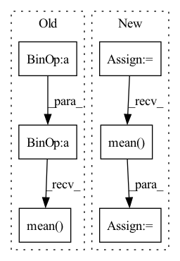

Pattern ID :2855

Before Change
eps = self.eps
loss = - target * torch.log(input + eps) - (1 - target) * torch.log(1 - input + eps)
loss = loss.squeeze(dim=1).mean(dim=1)
if batch_mean:
loss = loss.mean(dim=0)
After Change
eps = self.eps
loss = - target * torch.log(input + eps)
loss = loss.sum(dim=self.class_dim)
n_dims = loss.dim()
dim = tuple(range(1, n_dims))
if reduction == "mean":
loss = loss.mean(dim=dim)
elif reduction == "sum":
loss = loss.sum(dim=dim)
if batch_mean:
In pattern: SUPERPATTERN
Frequency: 5
Non-data size: 6
Instances
Fragment ID: 15676206
Project Name: tky823/dnn-based_source_separation
Commit Name: 56f95a42611aeaeb3499f097d347a17787656474
Time: 2021-12-04
Author: delta9guitar97@gmail.com
File Name: src/criterion/entropy.py
M Class Name: CrossEntropy
N Class Name: CrossEntropy
M Method Name: forward(4)
N Method Name: forward(4)
M Parent Class: nn.Module
N Parent Class: nn.Module
M File Name: src/criterion/entropy.py
N File Name: src/criterion/entropy.py
M Start Line: 44
M End Line: 47
N Start Line: 55
N End Line: 69
'>
Before Change
else:
// Generator step: corrupt context relations
logit = logit.permute(0, 2, 1).reshape(-1, k)
p = Categorical(logits=logit)
q = Categorical(logits=torch.zeros_like(logit))
loss = kl_divergence(p, q).mean()
losses.append(loss)
return sum(losses)
After Change
// p = Categorical(logits=logit)
// q = Categorical(logits=torch.zeros_like(logit))
// loss = kl_divergence(p, q).mean()
loss = -torch.minimum(self._ceLoss(logit, target), -torch.log(torch.ones_like(target, dtype=torch.float32) / k)).mean()
losses.append(loss)
return sum(losses) / len(losses)
'>
Fragment ID: 15676174
Project Name: xiaosu-zhu/mcquic
Commit Name: 006c18a0b581431293e06d75d72a1a5ec392d6f6
Time: 2021-05-29
Author: xiaosu.zhu@outlook.com
File Name: src/mcqc/losses/mlm.py
M Class Name: ContextGANLoss
N Class Name: ContextGANLoss
M Method Name: forward(4)
N Method Name: forward(4)
M Parent Class: nn.Module
N Parent Class: nn.Module
M File Name: src/mcqc/losses/mlm.py
N File Name: src/mcqc/losses/mlm.py
M Start Line: 54
M End Line: 69
N Start Line: 54
N End Line: 70
'>
Before Change
inputs: prediction matrix (before softmax) with shape (batch_size, num_classes)
targets: ground truth labels with shape (num_classes)
log_prob = self.logsoftmax(inputs)
targets = torch.zeros_like(log_prob).scatter_(1, targets.unsqueeze(1), 1)
targets = (1 - self.epsilon) * targets + self.epsilon / self.num_classes
loss = (- targets * log_prob).mean(0).sum()
return loss
After Change
log_prob = self.log_softmax(y)
labels = torch.zeros_like(log_prob).scatter_(1, labels.unsqueeze(1), 1)
labels = (1 - self.epsilon) * labels + self.epsilon / self.num_classes
loss = (- labels * log_prob).mean(0).sum()
return loss
'>
Fragment ID: 15676157
Project Name: thuml/transfer-learning-library
Commit Name: c87131a7350967d7af5f9167eae4befc0f57b157
Time: 2021-08-24
Author: chenbx18@mails.tsinghua.edu.cn
File Name: common/vision/models/reid/loss.py
M Class Name: CrossEntropyLabelSmooth
N Class Name: CrossEntropyLossWithLabelSmooth
M Method Name: forward(3)
N Method Name: forward(3)
M Parent Class: nn.Module
N Parent Class: nn.Module
M File Name: common/vision/models/reid/loss.py
N File Name: common/vision/models/reid/loss.py
M Start Line: 30
M End Line: 33
N Start Line: 79
N End Line: 82
'>
Before Change
for logit in logits:
// [N, H, W, K] -> [N, K]
// logit = logit.mean(dim=(1, 2))
posterior = Categorical(logits=logit)
prior = Categorical(logits=torch.zeros_like(logit))
reg = torch.distributions.kl_divergence(posterior, prior).mean()
regs.append(reg)
regs = sum(regs) / len(logits)
// regs = 0.0
return ssimLoss, l1Loss + l2Loss, regs
After Change
// codes: [m, n, h, w]; logits: m * list(n, h, w, k); codeFreqMap: m * list([n, h, w])
for code, logit, freqMap in zip(codes.permute(1, 0, 2, 3), logits, codeFreqMap):
needRegMask = (freqMap > (float(h * w) / k)).float()
sample = torch.distributions.Categorical(logits=torch.zeros_like(logit)).sample()
logit = logit.permute(0, 3, 1, 2)
ceReg = F.cross_entropy(logit, sample, reduction="none") * needRegMask
cePush = F.cross_entropy(logit, code, reduction="none") * (1 - needRegMask)
regs.append(ceReg.mean() + cePush.mean())
// // [m, n, h, w] and m * list(n, h, w, k) logits and [n, k] frequencies
// for code, logit, freq in zip(codes.permute(1, 0, 2, 3), logits, codeFreq):
// // perturb code by the most rare codes with 0.1 probability
'>
Fragment ID: 15676156
Project Name: xiaosu-zhu/mcquic
Commit Name: 3b419aa2f7b4286b6ae991022fe7469650db4bbd
Time: 2021-08-01
Author: xiaosu.zhu@outlook.com
File Name: src/mcqc/losses/quantization.py
M Class Name: CompressionLoss
N Class Name: CompressionLoss
M Method Name: forward(6)
N Method Name: forward(6)
M Parent Class: nn.Module
N Parent Class: nn.Module
M File Name: src/mcqc/losses/quantization.py
N File Name: src/mcqc/losses/quantization.py
M Start Line: 50
M End Line: 57
N Start Line: 49
N End Line: 88
'>
Before Change
def forward(self, chosen_reward: torch.Tensor, reject_reward: torch.Tensor) -> torch.Tensor:
probs = torch.sigmoid(chosen_reward - reject_reward)
log_probs = torch.log(probs)
loss = -log_probs.mean()
return loss
After Change
Details: https://arxiv.org/abs/2204.05862
def forward(self, chosen_reward: torch.Tensor, reject_reward: torch.Tensor) -> torch.Tensor:
loss = torch.log(1 + torch.exp(reject_reward - chosen_reward)).mean()
return loss
'>
Fragment ID: 15676195
Project Name: hpcaitech/colossalai
Commit Name: 7548ca5a54ed117f03247dcb43ec1dd962ae04e0
Time: 2023-03-19
Author: 70618399+ht-zhou@users.noreply.github.com
File Name: applications/ChatGPT/chatgpt/models/loss.py
M Class Name: PairWiseLoss
N Class Name: LogExpLoss
M Method Name: forward(3)
N Method Name: forward(3)
M Parent Class: nn.Module
N Parent Class: nn.Module
M File Name: applications/ChatGPT/chatgpt/models/loss.py
N File Name: applications/ChatGPT/chatgpt/models/loss.py
M Start Line: 102
M End Line: 104
N Start Line: 114
N End Line: 114